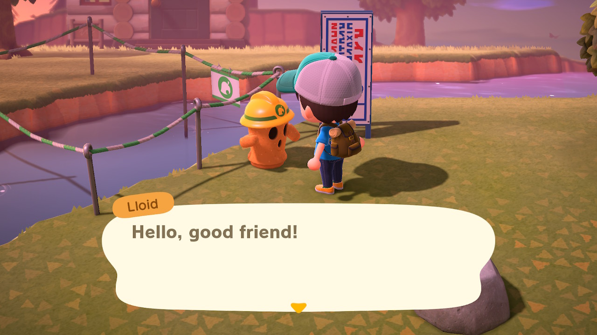
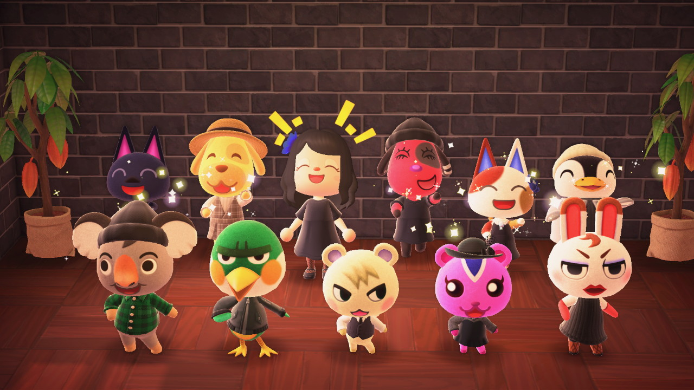
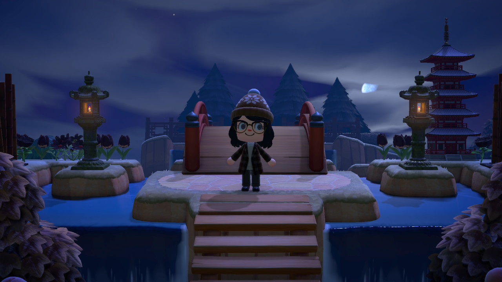
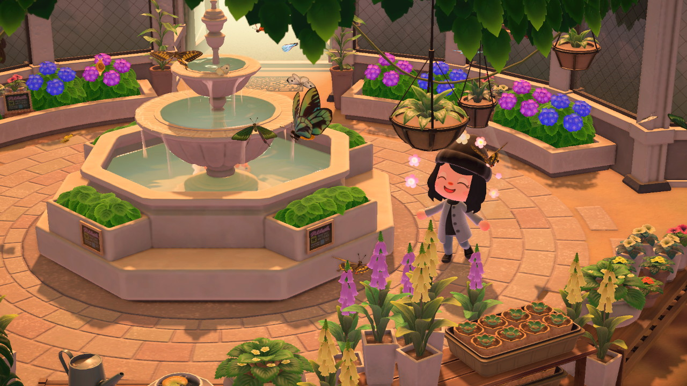
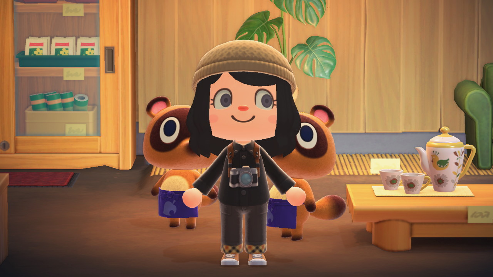
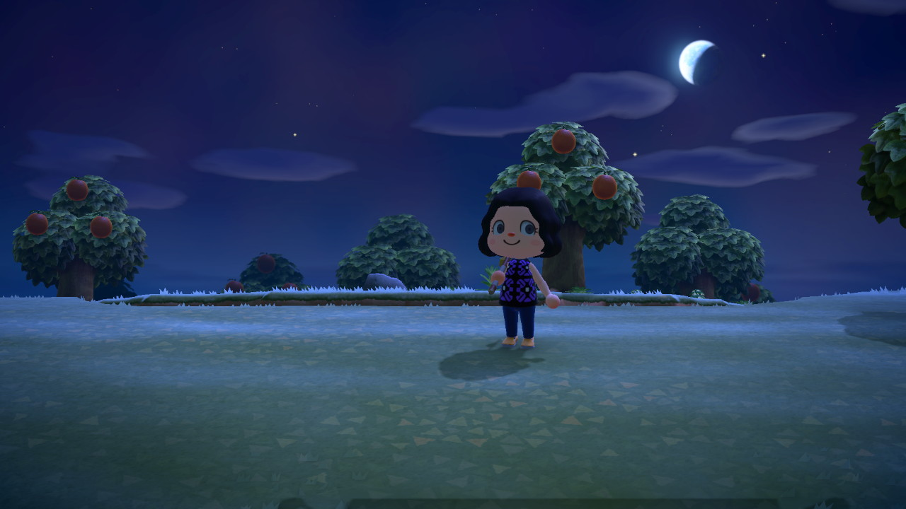
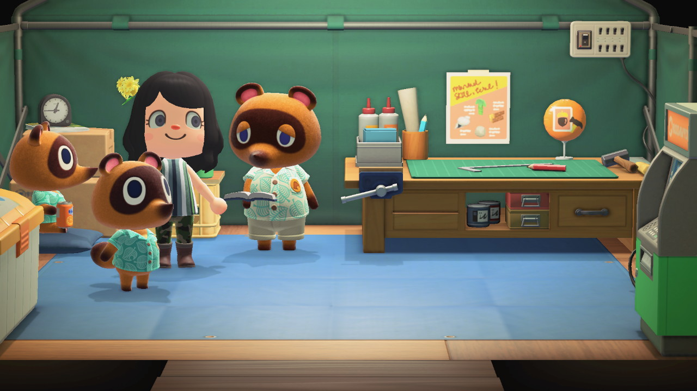
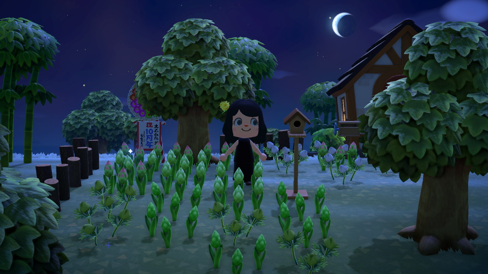
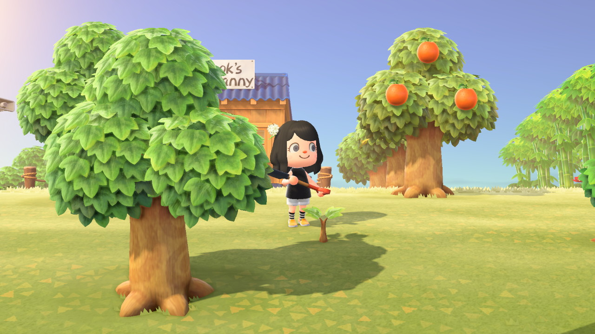
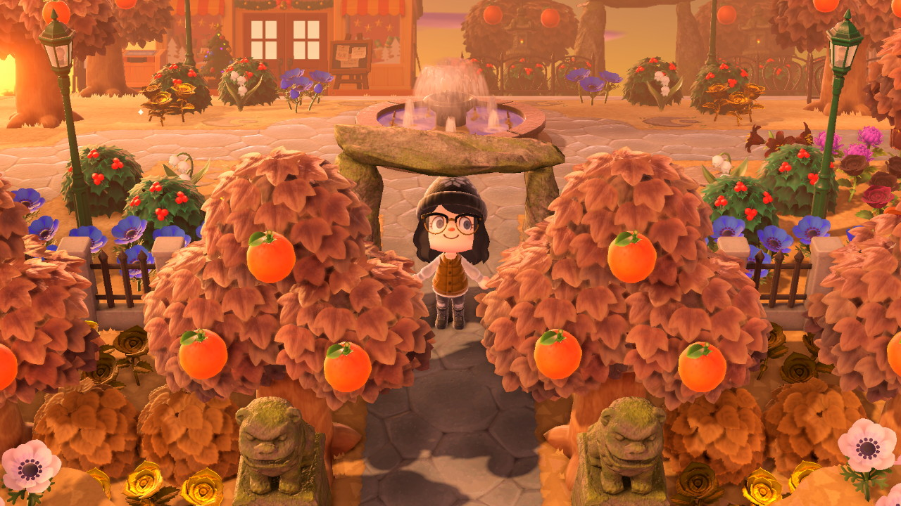

Winter... IS HERE
While covered in snow, Moon Isle is an island paradise and a winter wonderland.
 Check out more upcoming events →Meet the Residents of Moon Isle
The wonderful residents of Moon Isle are part of what makes our island such a special place!
 See our closeups →The many attractions on Moon Isle
There are so many exciting attractions on Moon Isle just waiting to be explored!
 See some of what you'll find →The Moon Isle Museum
Our Museum is overflowing with art, fish, bugs, and fossils you won't want to miss!
 View our exhibits →Shopping on Moon Isle
From the Nook's Cranny general store to the Able Sister's tailor shop, we've got you covered!
 View shop details →New to Animal Crossing?
Animal Crossing is a video game series from Nintendo - many people consider Animal Crossing games to be the cutest in existence and also extremely fun to play. Animal Crossing New Horizons (ACNH) is the latest game in the series, made for the Nintendo Switch gaming console.
Learn more about Animal Crossing →It is a known fact that real gamers play Animal Crossing. If you're interested in joining the rest of us in what is perhaps the most popular 2020 escapism, pick up a copy of ACNH today!
Buy a copy →From Humble Beginnings...
Moon Isle began as a remote, desert island.
Day 1

Day 2
Day 3
Day 6
...to an Island Paradise with a 5-star rating!
Come experience Moon Isle for yourself!
Start planning your visit today →